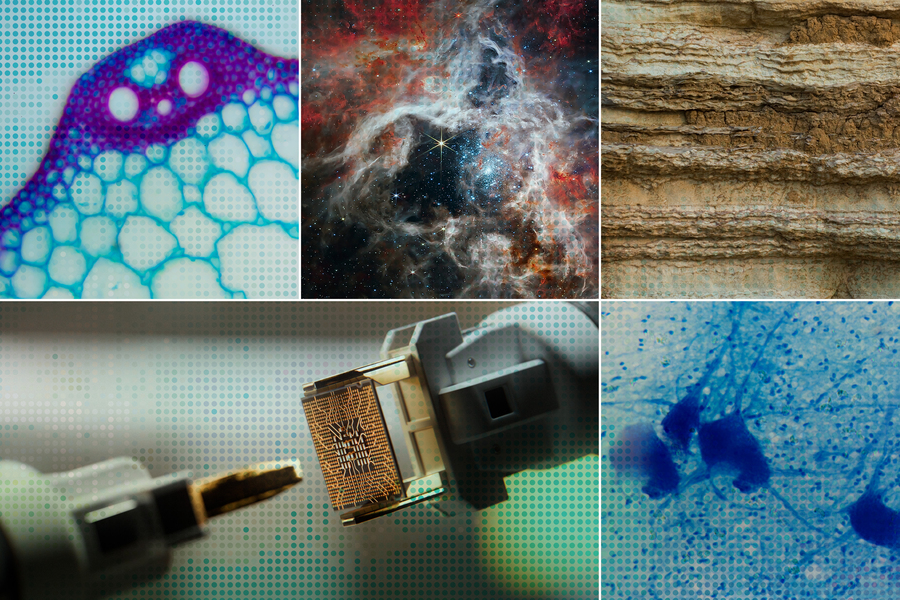
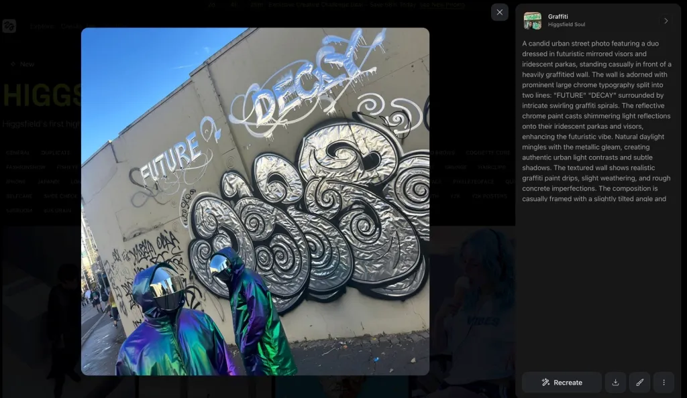

AI USED
FOR
SCIENTIFIC
RESEARCH
IN MIT

Over the past 50 years, scientific productivity has declined—it now takes more time, money, and effort to make discoveries that once came more easily. A key reason is the increasing complexity and specialization of science, which slows down researchers. To address this, FutureHouse, a philanthropically funded lab, is building an AI platform to automate key parts of the scientific process.
Founded by Sam Rodriques (MIT PhD ’19) and Andrew White, FutureHouse developed a suite of AI agents for tasks like literature review, data analysis, and experiment planning. Their goal is to break through research bottlenecks and boost scientific productivity. Rodriques emphasizes that science is fundamentally driven by natural language, which their AI tools are designed to understand and generate.
The platform includes agents like:
Crow (formerly PaperQA): retrieves and summarizes scientific literature.
Owl (formerly Has Anyone): checks if specific research or experiments have already been done.
Falcon: handles broader literature reviews.
Phoenix: helps design chemistry experiments.
Finch: supports data-driven discovery in biology.
The platform was officially launched in May 2025 and demonstrated its capabilities by identifying a new drug candidate for age-related macular degeneration. In June, they also released ether, a powerful open-source reasoning model for chemistry.
Researchers have already used the platform to uncover potential treatments for diseases like polycystic ovary syndrome and Alzheimer’s. FutureHouse aims to integrate its AI agents into a seamless system capable of not just reviewing literature but analyzing raw data, verifying results, and forming new hypotheses.
Rodriques envisions a future where these agents are embedded with deeper scientific knowledge and can work with advanced tools and models to further accelerate discovery.
OTHER NEWS
Xbox Producer Suggests AI to staff to Ease job loss pain
An Xbox executive faced backlash after recommending that employees impacted by Microsoft’s recent layoffs use artificial intelligence to help cope with their emotions—a suggestion he made in a now-deleted LinkedIn post. Matt Turnbull, executive producer at Xbox Game Studios Publishing, posted this shortly after Microsoft announced plans to cut up to 9,000 jobs, about 4% of its global workforce, with the Xbox division reportedly affected. In his message, Turnbull acknowledged the difficulty of layoffs and encouraged those affected to know they are not alone, suggesting AI tools like ChatGPT and Microsoft Copilot could help ease the mental strain of job loss. He shared prompts to assist with tasks such as resume writing, LinkedIn updates, and gaining emotional clarity, emphasizing he was trying to offer practical support. However, many found the suggestion insensitive, with critics calling it “plain disgusting” and “tone-deaf” given the seriousness of layoffs. This controversy arises as Microsoft increases its investment in AI, committing $80 billion to build data centers that support its expanding AI infrastructure.
AI Art Generation And Its effects On Artists
Joy Cardaño, a full-time artist in the Philippines, has seen a sharp decline in commissions for her anime-inspired work as more people turn to AI-generated art. She and many other artists argue that AI threatens their livelihoods by mimicking their styles without consent, stripping value from years of creative effort. Cardaño publicly criticized the use of AI, calling it unethical and urging users to respect artists' rights, especially amid viral trends like Studio Ghibli-inspired AI art. Other artists, like Hollie Mengert and Sarah Andersen, have voiced similar concerns—Mengert found her style being imitated by AI, while Andersen joined a lawsuit against AI companies for copyright infringement. Despite OpenAI's safeguards against replicating the styles of living artists, worries persist, especially as AI tools remain capable of generating images that closely resemble popular aesthetics. While OpenAI CEO Sam Altman defends the technology as a net positive for creativity, many artists feel the financial and emotional impact of AI’s growing role in the art world
AI is being adapted by lawyers
In recent years, legal professionals have become more open to using artificial intelligence (AI), recognizing its ability to improve productivity and transform legal work. According to Thomson Reuters’ 2024 Future of Professionals Report, AI tools are already automating routine tasks like legal research, document review, and contract drafting, saving lawyers up to four hours per week and potentially adding $100,000 in new billable hours annually. To fully benefit, legal professionals must adopt AI thoughtfully and ensure the tools they use are accurate, transparent, and built on trusted legal sources. As workflows become more efficient, many lawyers anticipate a shift away from hourly billing models and toward more value-based services. The time saved by AI could allow lawyers to focus on strategic planning, client relationships, and more meaningful, intellectually rewarding legal work. Ultimately, AI is helping reshape the legal industry, pushing professionals to adapt and deliver greater value to both clients and their firms.
Music producer Paul Sinclair Uses AI to produce music
Suno, a major player in AI-generated music, has hired former Atlantic Records executive Paul Sinclair as its Chief Music Officer. Having advised the company for months, Sinclair will now help shape how Suno’s AI tools support music creation for artists at all levels. CEO Mikey Shulman praised Sinclair’s unique mix of industry and tech experience, calling it essential to the company’s next chapter. Sinclair says he’s excited to explore how AI can empower creativity, support artists, and deepen the connection between music and fans. His appointment comes amid growing debate over AI’s role in music, especially around copyright issues. Suno is currently facing a lawsuit from major record labels, though settlement talks are reportedly in progress.
AI is transforming the world of medicine
AI is rapidly transforming medicine, shifting from a time-consuming tool for information retrieval into a real-time assistant that can summarize research, support diagnoses, and improve doctor-patient interactions. Tools like OpenEvidence, built on large language models like ChatGPT, are helping doctors make faster, more informed decisions, although concerns remain about biases, hallucinated facts, and the risk of minimal systemic change. Experts argue that AI's success in medicine hinges on addressing inequities, integrating diverse data, and ensuring human oversight to avoid reinforcing flawed legacy systems. In research and education, AI is already enabling major scientific advances and reshaping how future clinicians are trained, from protein structure prediction to virtual patient simulations. While challenges persist, many believe that embracing AI boldly, ethically, and with systemic reform can lead to a more equitable and effective healthcare systems
Soul AI Image Generation Stuns Many
AI image generators have existed for years, but their realism has advanced rapidly in recent months. Tools like ChatGPT, Gemini, Firefly, and Midjourney now create visuals that are nearly indistinguishable from real photos, often without visible watermarks. ChatGPT’s release of its 4o image generator brought a wave of attention, but Google’s Gemini, powered by Imagen 4 and Imagen 4 Ultra, offers similarly powerful results. A new player, Soul—developed by Higgsfield—has quickly gone viral for its highly aesthetic, photo-realistic output, often compared to professional smartphone photography. Soul features over 50 built-in presets, such as “iPhone” and “Tokyo Streetstyle,” which make generating specific styles simple and fast, without needing to describe technical details. While it doesn’t support image uploads, a $9 monthly subscription gives users 150 credits and watermark-free images, all accessible through a web browser.